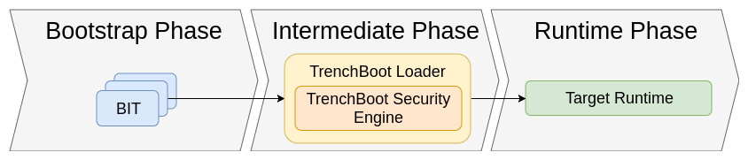

TrenchBoot FAQ¶
- Why use TrenchBoot?
- How does TrenchBoot work?
- What is the TrenchBoot intermediate loader?
- How do measurement trust chains contrast with verification trust chains?
- What do I need to incorporate TrenchBoot into my system?
- Where do I start if I want to help with contributions?
1. Why use TrenchBoot? (background info)¶
What is Trust?¶
Trust is an assured reliance on the properties, ability, strength, or truth of an entity (see Glossary). If we assume any information or property is true without measuring and proving it, we need to trust it. This might include the belief that our computer will behave in an expected way, that it won't leak our data, and that it won't do something we didn't intend or expect.
When establishing the trust of system components, there are two primary schools of thought: Static Root of Trust for Measurement (SRTM) and Dynamic Root of Trust for Measurement (DRTM).
SRTM¶
SRTM Starts with Core Root of Trust for Measurement (CRTM), and works its way up the chain where each link verifies the next. In other words, SRTM starts by measuring the BIOS boot block and moves on to measure the rest of the BIOS. SRTM has a few problems:
- Large TCB (Trusted Computing Base): the more software added to the chain of trust, the more potential vectors of attack.
- Takes place before boot: reassuring the validity of the chain of trust requires a reboot.
- Only provides load-time integrity assurance: integrity is maintained during boot, but there is no guarantee it will remain so.
DRTM¶
DRTM aims to address shortcomings of SRTM. DRTM creates a trusted environment from an untrusted state. Essentially what this means is that regardless of whether or not computer was booted from trusted software, it uses hardware to ensure that no malicious software, which may or may not have been run before the dynamic launch, can impact software started after the dynamic launch. For this reason, DRTM takes place after boot, as opposed to SRTM, which takes place pre-boot. Intel's solution for DRTM is TXT, which utilizes special instructions on the processor (SMX). AMD's solution for DRTM is called SKINIT. Overall, TrenchBoot provides a solution for setting up DRTM for an arbitrary platform.
Typical Measured Launch Process¶
The process for carrying out DTRM depends on your system:
- Intel TXT: Software Development Guide
- System Programming Volume of for AMD64 (PDF) (see "Secure Startup with SKINIT" section)
Why TrenchBoot?¶
- Managing multiple independent components individually can be confusing
- Most DRTM systems are platform-dependent
- Most DRTM systems can only measure entities already present in RAM at the time DRTM sequence is initiated
- Most DRTM systems support only one attestation action
TrenchBoot is meant to solve these and many other problems by providing a universal framework for building integrity of software components in the process of booting a computer system.
2. How does TrenchBoot work? (TrenchBoot architecture)¶
Architecture Overview¶
The full architecture overview can be found on the corresponding page.  This diagram shows a general overview of the overall architecture of a TrenchBoot system. In Bootstrap phase, the system environment is measured and that information stored in the dynamic PCRs using whatever method is appropriate for the given hardware. The intermediate phase analyzes the information collected in the bootstrap phase to decide whether it wants to continue booting and pass control to the target OS or if it wants to stop immediately. If desired, additional evidence/measurements can be gathered in this phase. Once the integrity of the system is verified, the TrenchBoot kernel passes off control to the actual desired OS to initiate the runtime phase.
Bootstrap Phase - GRUB¶
GRUB has commands built in to carry out a TrenchBoot Secure Launch (currently
supporting Intel TXT and AMD SKINIT). This is typically called the pre-launch or
preamble phase of the launch. These commands are slaunch and slaunch_module.
The custom GRUB works with:
- Linux boot protocol (Intel only, legacy and UEFI)
- Multiboot2 boot protocol (both Intel and AMD, but only legacy boot)
Support for AMD Linux and Multiboot2 UEFI will be added later.
Intermediate Phase - Linux Kernel / U-ROOT (Initramfs)¶
The intermediate phase processes information collected in the bootstrap phase and converts it into normalized data. This data is eventually used to determine whether to boot into the target OS. Together the kernel and u-root initramfs make up TrenchBoot's Security Engine, an intermediate mini-OS that processes data gathered by that bootstrap phase. During the intermediate phase, the kernel and initramfs work together to measure block devices, individual files, SMBUS/DMI information, etc. The kernel and initramfs also provide unseal based, external device and network based attestation. TrenchBoot calls this functionality Secure Launch (aka slaunch).
3. What is the TrenchBoot intermediate loader?¶
For Linux systems doing both verified (secure) and measured boot, there is an intermediary that handles the security enforcement. For verified boot, the intermediary is the UEFI shim loader and for measured boot, it is tboot. One of the use cases for TrenchBoot is a drop-in replacement of tboot, hence a common Linux-based loader that provides a rich security processing framework is used as an intermediate stage. This allows for easy modifications to the framework in an environment that most developers are familiar with. Other use cases may choose to modify this stage, or drop it altogether if the security processing is done in the final payload.
Intermediate loader tends to be the most common DRTM use case, it's how tboot works and how Microsoft's Secure Core DRTM works. It allows for starting existing operating systems with minimal or no changes.
4. How do measurement trust chains contrast with verification trust chains?¶
It is important to understand that one solution is not necessarily more beneficial over the other. Measurement and Verification each have their merits and it is important to understand the environment and requirements of the solution. In the case of verification, it provides a one-time strong assertion to origination and correctness that relies on Authorities and Control which becomes brittle when dealing with delegating control. For example when verification is being used as the Root of Trust that the transitive trust builds upon, these solutions are strongest when the ecosystem is closed and under control of a core entity. Where as measurement provides for establishing a strong assertion to correctness that can be repeatedly extended and verified. It therefore relies on the ability to know what correct is and to securely verify measurement with expected correctness.
5. What do I need to incorporate TrenchBoot into my system?¶
TrenchBoot is a framework that allows you to build a Linux kernel with a tailored, embedded initramfs that functions as an intermediate loader to launch your system. You will need to use the build system to select the security engine components you desire, provide any necessary configurations, and build an instance of the loader. Next, configure your system boot to launch the loader.
6. Where do I start if I want to help with contributions?¶
TrenchBoot Blueprints collect product feature requests. Check to see if there is an existing blueprint that addresses your feature request. You may also submit a blueprint via pull request to suggest features for implementation.